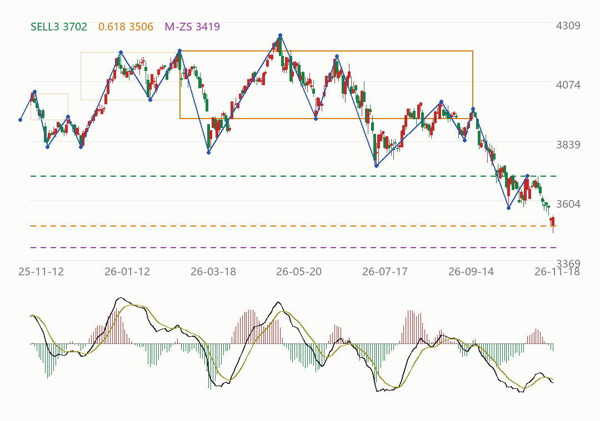
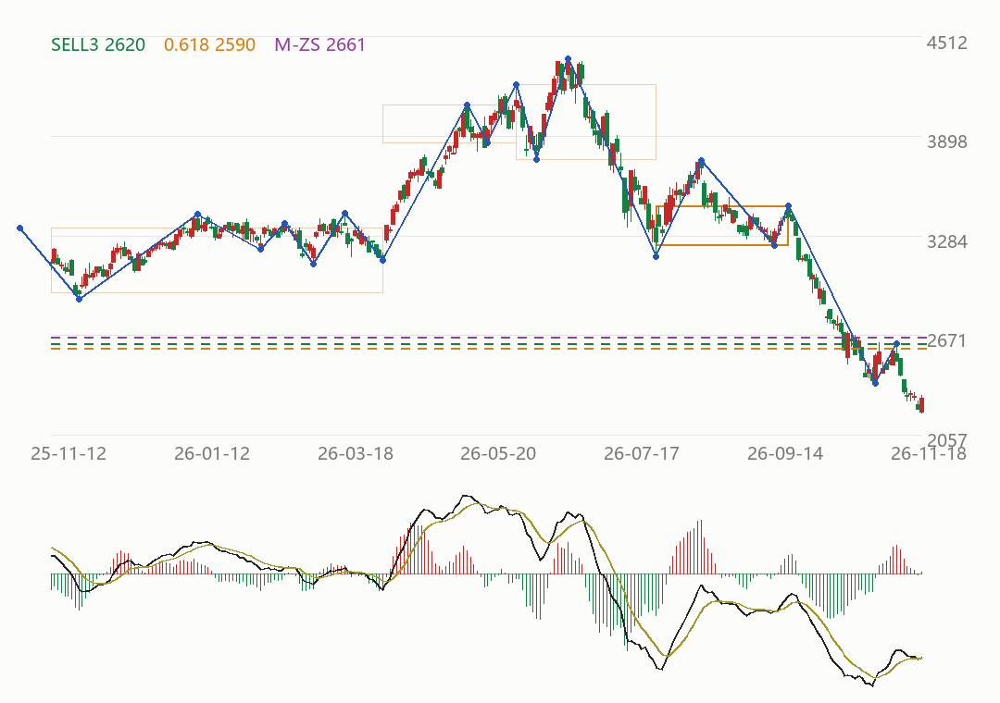

今 日 信 号
下跌在减速，等底分型
日线在 3928~4197 中枢下方；离开后反弹第一次只到 3701.59（三卖）。本轮下跌 3574→3477：价新低、DIF 抬高（-57.1→-52.3）、绿柱面积缩小；这一笔还没走完。30 分钟最后中枢 3675~3708。
结构状态
日线位置中枢下方（3928~4197）
三买 / 三卖三卖 3701.59（第 1 次回试）
同向笔力度（背驰近似）价新低 + DIF 抬高 + 面积缩（≈底背驰）
30 分钟最后中枢 3675~3708
量价配合量价平稳 量比 1.14x，当日 +0.15% 无明显量能信号
月线（大级别）月线中枢 3041~3419（在上方）
级别梯 现价 3538.95
| 级别 | 最后中枢 | 位置 | 距最近边界 |
|---|
| 日线 | 3927.85~4197.23 | 中枢下方 | 需涨 +11.0% |
| 30min | 3674.82~3708.20 | 中枢下方 | 需涨 +3.8% |
| 5min | 3505.74~3517.64 | 中枢上方 | 需跌 -0.6% |
大级别定方向、小级别定动作。日线中枢只用来判“结构坏没坏”，能不能动手看 5min / 30min。
旁证（非缠论口径，不进判定）：上方另有 6 道跳空未补 —— 3544.60~3577.62、3584.28~3587.83、3623.12~3634.35 等。缠论里缺口只用于线段划分的特征序列，不是目标位；本站判定只看中枢。
级别升级状态机 2/4
5min 起点 3476.65（2026-11-23 10:40）。“5min 段成立 → 回踩不破 → 做出 30min 中枢”三件事依次完成，才算 30min 级别启动；在此之前每次反弹都可能是最后一次。
| 关口 | 状态 | 读数 |
|---|
| 5min 向上笔 | 已过 | 已走出，高点 3544.60 |
| 5min 向上段 | 未过 | 需再破 3544.60 |
| 回踩不破 | 已过 | 回踩 3523.32，起点 3476.65 |
| 30min 中枢 | 未过 | 30min 中枢 3674.82~3708.20（2026-10-15 起），但早于本次起点 |
中枢稳定性自检 最大漂移 0.00 点
当前日线中枢 3927.85~4197.23，结束于 2026-09-22（距今 38 根 K 线）。中枢若已结束多日，边界自然不会漂移；真正要盯的是它还在延伸时会不会被尾部数据带跑。
| 回退 | 中枢起点 | 下沿/上沿漂移 |
|---|
| T-1 | 2026-03-03 | +0.00 / +0.00 |
| T-2 | 2026-03-03 | +0.00 / +0.00 |
| T-3 | 2026-03-03 | +0.00 / +0.00 |
同一段行情少用最后几根 K 线重算，中枢边界应当基本不动。漂移超过 5 点，说明边界依赖尾部数据，触发价要打折看。
风控提示（原文规则）
第16课 入场后一旦出现盘整走势，坚决退出（盘整不参与，且盘整后有一半概率继续下跌）。
第20课 三类买卖点必须是第一次回试；三买后若走不出第二个同级别中枢（不成趋势），就在盘整高点出掉。
第20课 中枢延伸期间只做震荡，不做方向判断（价格在中枢内来回＝没有方向）。
当前触发
【第16课】力度已衰减但笔未走完（缺底分型）。此时按一买入场＝在'跌势未尽'处接刀，原文明确属于要躲的两大风险之一，应当等确认。
关键位
| 压力 | 点位 |
|---|
| MA20 | 3628.61 |
| 三卖 / 第一次反弹高点 | 3701.59 |
| 日线中枢下沿 | 3927.85 |
| 支撑 | 点位 |
|---|
| 0.618 回撤 | 3506.03 |
| 月线中枢上沿 | 3418.95 |
| 0.786 回撤 | 3301.38 |
出现什么才动手
| 如果出现 | 对应动作 |
|---|
| 30 分钟收盘站回 3674.82（最后中枢下沿）并写出底分型 | 短线止跌，可小仓做差，目标先看 MA20 3628.61 |
| 再跌破 3476.65 时，绿柱面积仍小于 -347 | 力度双缩且笔走完 → 一买近似 |
| 收盘跌破 3418.95 且一周收不回 | 大级别转弱，空间下移到 0.786（3301.38） |
| 反弹站上 3927.85 | 回到中枢内，下跌结构才算被破坏 |
日线结构图 蓝线=笔 橙框=中枢

信号灯走查回测 以当日收盘计
| 信号状态 | 样本 | 5日 | 10日 | 20日 | 5日胜率 | 20日回撤 |
|---|
| 红灯（空仓等） | 164 | +0.32% | +0.24% | +0.29% | 55% | -2.54% |
| 黄灯（观察） | 527 | +0.04% | +0.20% | +0.07% | 51% | -2.90% |
| 绿灯（持有） | 216 | -0.10% | +0.47% | -0.04% | 50% | -2.56% |
| 信号切换日 | 样本 | 5日 | 10日 | 20日 | 5日胜率 | 20日回撤 |
|---|
| 红灯（空仓等） | 46 | +0.58% | +0.35% | +0.22% | 65% | -2.19% |
| 黄灯（观察） 20日期望为负 | 104 | +0.14% | +0.18% | -0.14% | 52% | -2.75% |
| 绿灯（持有） | 61 | -0.71% | +0.18% | -1.48% | 38% | -3.19% |
样本期 2015-08-11 ~ 2026-10-26，中位数收益；“信号切换日”指灯由别的颜色切到该颜色的那一天。
⚠ 这张表是对本站自己的检验：信号灯本身没有稳定的边际（有的指数上红灯之后反而是涨的）。
所以请把它当“状态描述”，不要当择时指标；真正有信息量的是三卖/中枢下沿这些结构位，以及上面的风控规则。
最近 8 次收盘结论
| 日期 | 收盘 | 结论 |
|---|
| 2026-11-23 | 3538.95 | 下跌在减速，等底分型 |
| 2026-11-20 | 3533.79 | 下跌在减速，等底分型 |
口径 vs 原文（点开核对）
| 本站口径 | 原文（《教你炒股票》） |
|---|
| 用笔做中枢的最小零件 | 第18/20课：中枢由"三个连续次级别走势类型"重叠确定，区间 [max(a2,b2,c2), min(a1,b1,c1)]，简化为 [max(a2,c2), min(a1,c1)]。笔≠走势类型，简化了一级。 |
| 延伸：整笔区间与中枢区间有重叠即延伸，不设笔数截断 | 第20课中心定理一：中枢延伸 ⟺ 任意 [dn,gn] 与 [ZD,ZG] 有重叠。2026-11-24 已对齐（旧版用"笔端点落入区间"+9 笔截断，实测会让中枢上沿偏高、触发价随数据漂移）。 |
| 月线闸门三态 | 站上月线中枢上沿=放行；在中枢内部=只做小级别；跌破下沿=大级别破位。本站把"内部"当作震荡而非破位，这是本站的读法，原文没有这条量化规则。 |
| 缺口只作一行旁证，不进判定 | 缺口不是缠论要素。原文里缺口只出现在线段划分的特征序列（有无缺口决定线段破坏要不要第三元素确认），是分类判据、不是目标位。本站连线段都没自动识别，所以缺口只作参考，信号灯 / 升级状态机 / 触发表一概不用它。 |
| 量价配合四象限 | 不用"缩量=好"的单边门槛：指数是加权合成，低位放量可能是出清也可能是破位加速，本站只做描述不做判定。 |
| 三买/三卖只认第一次回试 | 第20课："并不是任何回调回抽都是第三类买卖点，必须是第一次。" —— 一致。 |
| 叫"同向笔力度（背驰近似）" | 第16课："没有趋势，没有背驰；背驰是前后趋势间的比较。" 本站比的是同向笔，不是两个趋势，所以只能叫近似。 |
| 风控块 | 第16课：入场后一旦出现盘整，坚决退出；第20课：三买后不成趋势，在盘整高点出掉。 |
今 日 信 号
下跌在减速，等底分型
日线在 3227~3472 中枢下方；离开后反弹第一次只到 2620.25（三卖）。本轮下跌 2376→2188：价新低、DIF 抬高（-204.5→-155.7）、绿柱面积缩小；这一笔还没走完。30 分钟最后中枢 2223~2248。
结构状态
日线位置中枢下方（3227~3472）
三买 / 三卖三卖 2620.25（第 1 次回试）
同向笔力度（背驰近似）价新低 + DIF 抬高 + 面积缩（≈底背驰）
30 分钟最后中枢 2223~2248
量价配合涨放量 量比 1.23x，当日 +3.08% 主动买盘进场，健康
月线（大级别）月线中枢 2122~2661（在内，大级别震荡）
级别梯 现价 2280.20
| 级别 | 最后中枢 | 位置 | 距最近边界 |
|---|
| 日线 | 3227.18~3472.47 | 中枢下方 | 需涨 +41.5% |
| 30min | 2222.77~2248.30 | 中枢上方 | 需跌 -1.4% |
| 5min | 2195.52~2218.20 | 中枢上方 | 需跌 -2.7% |
大级别定方向、小级别定动作。日线中枢只用来判“结构坏没坏”，能不能动手看 5min / 30min。
旁证（非缠论口径，不进判定）：上方另有 6 道跳空未补 —— 2398.19~2426.08、2625.99~2634.76、2671.81~2684.10 等。缠论里缺口只用于线段划分的特征序列，不是目标位；本站判定只看中枢。
级别升级状态机 2/4
5min 起点 2188.45（2026-11-23 10:40）。“5min 段成立 → 回踩不破 → 做出 30min 中枢”三件事依次完成，才算 30min 级别启动；在此之前每次反弹都可能是最后一次。
| 关口 | 状态 | 读数 |
|---|
| 5min 向上笔 | 已过 | 已走出，高点 2297.56 |
| 5min 向上段 | 未过 | 需再破 2297.56 |
| 回踩不破 | 已过 | 回踩 2269.39，起点 2188.45 |
| 30min 中枢 | 未过 | 30min 中枢 2222.77~2248.30（2026-11-18 起），但早于本次起点 |
中枢稳定性自检 最大漂移 0.00 点
当前日线中枢 3227.18~3472.47，结束于 2026-09-22（距今 38 根 K 线）。中枢若已结束多日，边界自然不会漂移；真正要盯的是它还在延伸时会不会被尾部数据带跑。
| 回退 | 中枢起点 | 下沿/上沿漂移 |
|---|
| T-1 | 2026-07-30 | +0.00 / +0.00 |
| T-2 | 2026-07-30 | +0.00 / +0.00 |
| T-3 | 2026-07-30 | +0.00 / +0.00 |
同一段行情少用最后几根 K 线重算，中枢边界应当基本不动。漂移超过 5 点，说明边界依赖尾部数据，触发价要打折看。
风控提示（原文规则）
第16课 入场后一旦出现盘整走势，坚决退出（盘整不参与，且盘整后有一半概率继续下跌）。
第20课 三类买卖点必须是第一次回试；三买后若走不出第二个同级别中枢（不成趋势），就在盘整高点出掉。
第20课 中枢延伸期间只做震荡，不做方向判断（价格在中枢内来回＝没有方向）。
当前触发
【第16课】力度已衰减但笔未走完（缺底分型）。此时按一买入场＝在'跌势未尽'处接刀，原文明确属于要躲的两大风险之一，应当等确认。
关键位
| 压力 | 点位 |
|---|
| MA20 | 2435.56 |
| 三卖 / 第一次反弹高点 | 2620.25 |
| 日线中枢下沿 | 3227.18 |
| 支撑 | 点位 |
|---|
| 月线中枢上沿 | 2661.28 |
| 0.618 回撤 | 2589.80 |
| 0.786 回撤 | 2103.04 |
出现什么才动手
| 如果出现 | 对应动作 |
|---|
| 30 分钟收盘站回 2222.77（最后中枢下沿）并写出底分型 | 短线止跌，可小仓做差，目标先看 MA20 2435.56 |
| 再跌破 2188.45 时，绿柱面积仍小于 -1107 | 力度双缩且笔走完 → 一买近似 |
| 收盘跌破 2661.28 且一周收不回 | 大级别转弱，空间下移到 0.786（2103.04） |
| 反弹站上 3227.18 | 回到中枢内，下跌结构才算被破坏 |
日线结构图 蓝线=笔 橙框=中枢

信号灯走查回测 以当日收盘计
| 信号状态 | 样本 | 5日 | 10日 | 20日 | 5日胜率 | 20日回撤 |
|---|
| 红灯（空仓等） | 202 | +0.21% | -0.17% | -1.14% | 51% | -4.67% |
| 黄灯（观察） 20日期望为负 | 543 | -0.22% | +0.01% | -0.10% | 48% | -4.88% |
| 绿灯（持有） | 162 | +0.23% | +0.67% | +0.50% | 52% | -4.69% |
| 信号切换日 | 样本 | 5日 | 10日 | 20日 | 5日胜率 | 20日回撤 |
|---|
| 红灯（空仓等） | 53 | +0.55% | +0.71% | -0.22% | 57% | -3.19% |
| 黄灯（观察） | 83 | -0.08% | +0.01% | +0.13% | 48% | -4.49% |
| 绿灯（持有） | 33 | +1.27% | +1.76% | +1.05% | 64% | -3.98% |
样本期 2015-08-11 ~ 2026-10-26，中位数收益；“信号切换日”指灯由别的颜色切到该颜色的那一天。
⚠ 这张表是对本站自己的检验：信号灯本身没有稳定的边际（有的指数上红灯之后反而是涨的）。
所以请把它当“状态描述”，不要当择时指标；真正有信息量的是三卖/中枢下沿这些结构位，以及上面的风控规则。
最近 8 次收盘结论
| 日期 | 收盘 | 结论 |
|---|
| 2026-11-23 | 2280.20 | 下跌在减速，等底分型 |
| 2026-11-20 | 2212.13 | 月线破位，宁可空仓 |
口径 vs 原文（点开核对）
| 本站口径 | 原文（《教你炒股票》） |
|---|
| 用笔做中枢的最小零件 | 第18/20课：中枢由"三个连续次级别走势类型"重叠确定，区间 [max(a2,b2,c2), min(a1,b1,c1)]，简化为 [max(a2,c2), min(a1,c1)]。笔≠走势类型，简化了一级。 |
| 延伸：整笔区间与中枢区间有重叠即延伸，不设笔数截断 | 第20课中心定理一：中枢延伸 ⟺ 任意 [dn,gn] 与 [ZD,ZG] 有重叠。2026-11-24 已对齐（旧版用"笔端点落入区间"+9 笔截断，实测会让中枢上沿偏高、触发价随数据漂移）。 |
| 月线闸门三态 | 站上月线中枢上沿=放行；在中枢内部=只做小级别；跌破下沿=大级别破位。本站把"内部"当作震荡而非破位，这是本站的读法，原文没有这条量化规则。 |
| 缺口只作一行旁证，不进判定 | 缺口不是缠论要素。原文里缺口只出现在线段划分的特征序列（有无缺口决定线段破坏要不要第三元素确认），是分类判据、不是目标位。本站连线段都没自动识别，所以缺口只作参考，信号灯 / 升级状态机 / 触发表一概不用它。 |
| 量价配合四象限 | 不用"缩量=好"的单边门槛：指数是加权合成，低位放量可能是出清也可能是破位加速，本站只做描述不做判定。 |
| 三买/三卖只认第一次回试 | 第20课："并不是任何回调回抽都是第三类买卖点，必须是第一次。" —— 一致。 |
| 叫"同向笔力度（背驰近似）" | 第16课："没有趋势，没有背驰；背驰是前后趋势间的比较。" 本站比的是同向笔，不是两个趋势，所以只能叫近似。 |
| 风控块 | 第16课：入场后一旦出现盘整，坚决退出；第20课：三买后不成趋势，在盘整高点出掉。 |
今 日 信 号
下跌未减速，空仓等
日线在 1578~1902 中枢下方；离开后反弹第一次只到 1364.88（三卖）。本轮下跌 1132→1178：还没跌破前低 1132.33；这一笔还没走完。30 分钟最后中枢 1257~1277。
结构状态
日线位置中枢下方（1578~1902）
三买 / 三卖三卖 1364.88（第 1 次回试）
同向笔力度（背驰近似）未跌破前低
30 分钟最后中枢 1257~1277
量价配合量价平稳 量比 1.01x，当日 -0.26% 无明显量能信号
月线（大级别）月线中枢 854~1168（在上方）
级别梯 现价 1227.89
| 级别 | 最后中枢 | 位置 | 距最近边界 |
|---|
| 日线 | 1578.18~1901.97 | 中枢下方 | 需涨 +28.5% |
| 30min | 1256.53~1277.34 | 中枢下方 | 需涨 +2.3% |
| 5min | 1223.86~1247.77 | 中枢内 | +0.0% |
大级别定方向、小级别定动作。日线中枢只用来判“结构坏没坏”，能不能动手看 5min / 30min。
旁证（非缠论口径，不进判定）：上方另有 6 道跳空未补 —— 1254.60~1270.78、1276.78~1279.66、1521.46~1530.01 等。缠论里缺口只用于线段划分的特征序列，不是目标位；本站判定只看中枢。
级别升级状态机 2/4
5min 起点 1177.56（2026-11-23 10:40）。“5min 段成立 → 回踩不破 → 做出 30min 中枢”三件事依次完成，才算 30min 级别启动；在此之前每次反弹都可能是最后一次。
| 关口 | 状态 | 读数 |
|---|
| 5min 向上笔 | 已过 | 已走出，高点 1243.16 |
| 5min 向上段 | 未过 | 需再破 1243.16 |
| 回踩不破 | 已过 | 回踩 1220.82，起点 1177.56 |
| 30min 中枢 | 未过 | 30min 中枢 1256.53~1277.34（2026-11-05 起），但早于本次起点 |
中枢稳定性自检 最大漂移 0.00 点
当前日线中枢 1578.18~1901.97，结束于 2026-09-22（距今 38 根 K 线）。中枢若已结束多日，边界自然不会漂移；真正要盯的是它还在延伸时会不会被尾部数据带跑。
| 回退 | 中枢起点 | 下沿/上沿漂移 |
|---|
| T-1 | 2026-03-24 | +0.00 / +0.00 |
| T-2 | 2026-03-24 | +0.00 / +0.00 |
| T-3 | 2026-03-24 | +0.00 / +0.00 |
同一段行情少用最后几根 K 线重算，中枢边界应当基本不动。漂移超过 5 点，说明边界依赖尾部数据，触发价要打折看。
风控提示（原文规则）
第16课 入场后一旦出现盘整走势，坚决退出（盘整不参与，且盘整后有一半概率继续下跌）。
第20课 三类买卖点必须是第一次回试；三买后若走不出第二个同级别中枢（不成趋势），就在盘整高点出掉。
第20课 中枢延伸期间只做震荡，不做方向判断（价格在中枢内来回＝没有方向）。
当前触发
【无】当前没有触发原文的退出条件；信号是'等待/空仓'，不构成买入依据。
关键位
| 压力 | 点位 |
|---|
| MA20 | 1245.11 |
| 三卖 / 第一次反弹高点 | 1364.88 |
| 日线中枢下沿 | 1578.18 |
| 支撑 | 点位 |
|---|
| 0.618 回撤 | 1257.48 |
| 月线中枢上沿 | 1168.09 |
| 0.786 回撤 | 986.25 |
出现什么才动手
| 如果出现 | 对应动作 |
|---|
| 30 分钟收盘站回 1256.53（最后中枢下沿）并写出底分型 | 短线止跌，可小仓做差，目标先看 MA20 1245.11 |
| 再跌破 1177.56 时，绿柱面积仍小于 -516 | 力度双缩且笔走完 → 一买近似 |
| 收盘跌破 1168.09 且一周收不回 | 大级别转弱，空间下移到 0.786（986.25） |
| 反弹站上 1578.18 | 回到中枢内，下跌结构才算被破坏 |
日线结构图 蓝线=笔 橙框=中枢

信号灯走查回测 以当日收盘计
| 信号状态 | 样本 | 5日 | 10日 | 20日 | 5日胜率 | 20日回撤 |
|---|
| 红灯（空仓等） | 149 | -0.01% | -0.72% | -1.84% | 50% | -5.69% |
| 黄灯（观察） 20日期望为负 | 227 | -0.44% | -0.64% | -0.88% | 47% | -4.69% |
| 绿灯（持有） | 87 | -0.33% | -0.63% | -2.71% | 49% | -5.63% |
| 信号切换日 | 样本 | 5日 | 10日 | 20日 | 5日胜率 | 20日回撤 |
|---|
| 红灯（空仓等） | 30 | +0.38% | -1.03% | -2.93% | 53% | -5.97% |
| 黄灯（观察） 20日期望为负 | 48 | -0.60% | -0.79% | -1.09% | 40% | -5.09% |
| 绿灯（持有） 样本不足 | 23 | -0.36% | -0.63% | -2.71% | 48% | -4.37% |
样本期 2021-01-27 ~ 2026-10-26，中位数收益；“信号切换日”指灯由别的颜色切到该颜色的那一天。
⚠ 这张表是对本站自己的检验：信号灯本身没有稳定的边际（有的指数上红灯之后反而是涨的）。
所以请把它当“状态描述”，不要当择时指标；真正有信息量的是三卖/中枢下沿这些结构位，以及上面的风控规则。
最近 8 次收盘结论
| 日期 | 收盘 | 结论 |
|---|
| 2026-11-23 | 1227.89 | 下跌未减速，空仓等 |
| 2026-11-20 | 1231.09 | 下跌未减速，空仓等 |
口径 vs 原文（点开核对）
| 本站口径 | 原文（《教你炒股票》） |
|---|
| 用笔做中枢的最小零件 | 第18/20课：中枢由"三个连续次级别走势类型"重叠确定，区间 [max(a2,b2,c2), min(a1,b1,c1)]，简化为 [max(a2,c2), min(a1,c1)]。笔≠走势类型，简化了一级。 |
| 延伸：整笔区间与中枢区间有重叠即延伸，不设笔数截断 | 第20课中心定理一：中枢延伸 ⟺ 任意 [dn,gn] 与 [ZD,ZG] 有重叠。2026-11-24 已对齐（旧版用"笔端点落入区间"+9 笔截断，实测会让中枢上沿偏高、触发价随数据漂移）。 |
| 月线闸门三态 | 站上月线中枢上沿=放行；在中枢内部=只做小级别；跌破下沿=大级别破位。本站把"内部"当作震荡而非破位，这是本站的读法，原文没有这条量化规则。 |
| 缺口只作一行旁证，不进判定 | 缺口不是缠论要素。原文里缺口只出现在线段划分的特征序列（有无缺口决定线段破坏要不要第三元素确认），是分类判据、不是目标位。本站连线段都没自动识别，所以缺口只作参考，信号灯 / 升级状态机 / 触发表一概不用它。 |
| 量价配合四象限 | 不用"缩量=好"的单边门槛：指数是加权合成，低位放量可能是出清也可能是破位加速，本站只做描述不做判定。 |
| 三买/三卖只认第一次回试 | 第20课："并不是任何回调回抽都是第三类买卖点，必须是第一次。" —— 一致。 |
| 叫"同向笔力度（背驰近似）" | 第16课："没有趋势，没有背驰；背驰是前后趋势间的比较。" 本站比的是同向笔，不是两个趋势，所以只能叫近似。 |
| 风控块 | 第16课：入场后一旦出现盘整，坚决退出；第20课：三买后不成趋势，在盘整高点出掉。 |